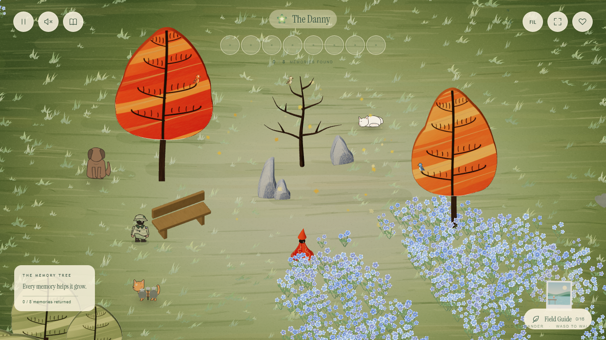
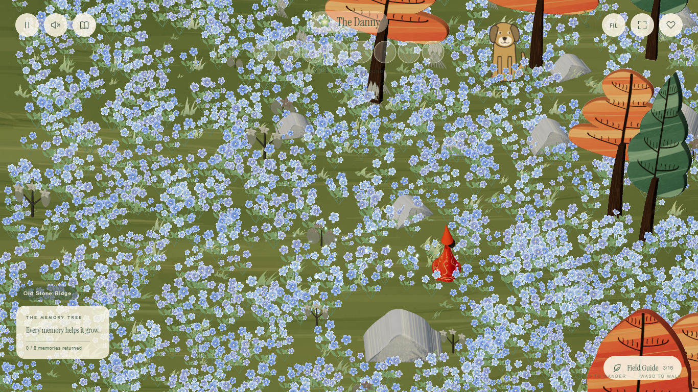
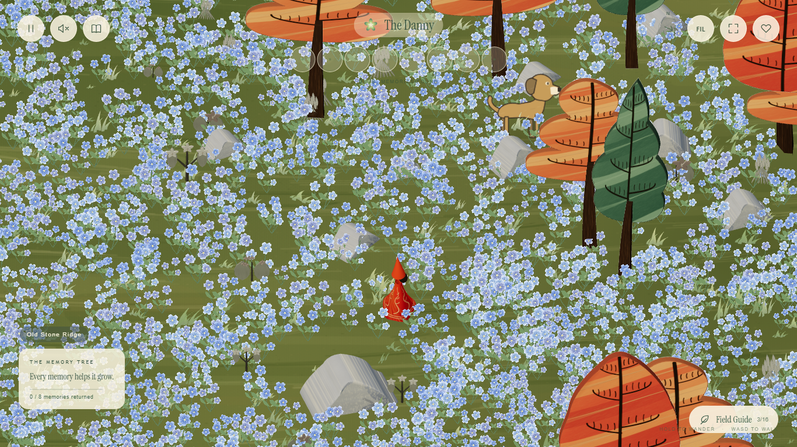
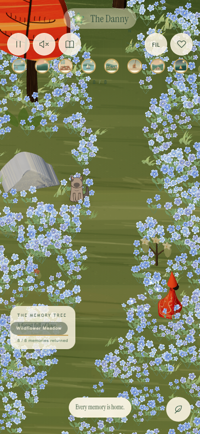

Painted meadow, glowing petals
Richer olive ground with broken brush strokes, greener grass, and small glowing blue petals that lift from touched flowers and fade after you pass.

Walk, then watch the petals fade
The traveler walks for three seconds, then stops. Only touched flowers release petals; the remaining glow fades away. This recording uses fixed simulation steps.
During passage and after stopping


Phone view
